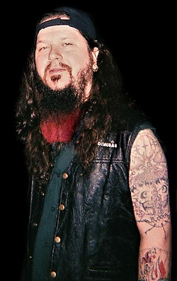
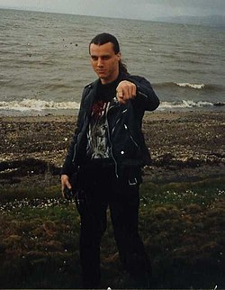
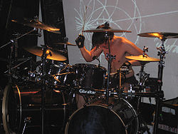
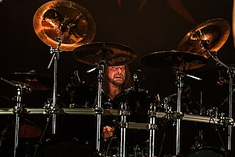
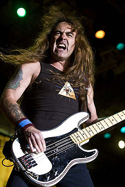
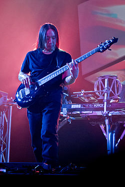
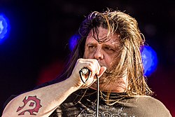
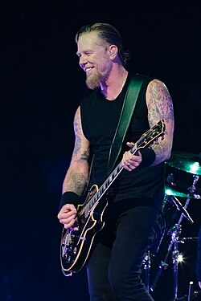
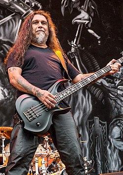
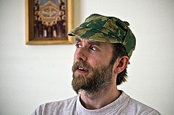

Top 10 muzicieni de metal renumiți
-> Dimebag Darell - Chitarist (Pantera, Damageplan)
Darrell Lance Abbott (n. 20 august 1966, Texas, SUA – d. 8 decembrie 2004, Alrosa Villa(d), Ohio, SUA), cunoscut ca și Diamond Darrell și Dimebag Darrell, a fost un chitarist american cunoscut mai ales ca membru fondator al formațiilor Pantera și Damageplan, alături de fratele său Vinnie Paul. Dimebag Darrell este considerat a fi unul din reprezentanții de bază al genului groove metal.
-> Chuck Schuldiner - Chitarist/Vocalist (Death)
Charles Michael Schuldiner (n. 13 mai 1967, New York City, New York, SUA – d. 13 decembrie 2001, Altamonte Springs(d), Florida, SUA) a fost un cântăreț, chitarist, compozitor american. A fost solistul, chitaristul, fondatorul și principalul compozitor al trupei americane de death metal Death. Acesta este considerat creatorul stilului de death metal.
-> Mario Duplantier - Toboșar (Gojira)
Mario François Duplantier (n. 19 iunie 1981, Bayonne, Aquitaine, Franța) este muzician și baterist al trupei franceze de groove/progresiv/death-metal Gojira. S-a impus ca un baterist puternic, precis din punct de vedere tehnic, folosind modele poliritmice și filluri și pauze de tobe distinctive jazzy.
-> Steve Asheim - Toboșar (Deicide)
Steven Kenneth Asheim (n. 17 ianuarie 1970) este un baterist american și compozitor principal pentru trupa de death metal din Florida, Deicide. Asheim susține Pearl, Paiste, Vater, Axis și este cunoscut că colecționează arme, care pot fi văzute în DVD-ul lui Deicide When London Burns. Asheim cântă și la chitară pe albumul Till Death Do Us Part. Pe 20 noiembrie 2007, Asheim s-a alăturat trupei de death/black metal din St. Petersburg, Florida, Council of the Fallen (redenumită ulterior Order of Ennead) ca baterist.
-> Steve Harris - Basist (Iron Maiden)
Steve Harris (născut Stephen Percy Harris; n. 12 martie 1956, Londra, Anglia, Regatul Unit) este fondatorul, basistul și principalul compozitor al trupei de heavy metal Iron Maiden. El înființează trupa în 1975, la numai 18 ani; el și Dave Murray fiind singurii membri originali ramași în trupă.
-> John Myung - Basist (Dream Theater)
Născut în Chicago din părinți sud-coreeni, Myung a crescut cu John Petrucci pe Long Island. A luat lecții de vioară de la vârsta de cinci ani și a început să cânte la chitară bas la cincisprezece ani. După absolvirea liceului, el și Petrucci s-au înscris la Berklee College of Music, unde l-au cunoscut pe Mike Portnoy. Trio-ul a devenit nucleul Dream Theater, care a devenit principalul obiectiv profesional al lui Myung.
-> George Fisher - Vocalist (Cannibal Corpse, Paths of Possession, Serpentine Dominion)
George Fisher (n. 8 iulie 1970), mai cunoscut sub numele său de scenă Corpsegrinder, este un vocalist american de death metal, care este solistul trupei Cannibal Corpse, Paths of Possession și supergrupul Serpentine Dominion. Loudwire l-a plasat pe Fisher pe locul 7 pe lista lor de „Top 25 Extreme Metal Vocalists”. Fisher este renumit pentru mărimea gâtului său, ceea ce a explicat că se datorează unei combinații de bătăi de cap și ridicare de greutăți când era mai tânăr.
-> James Hetfield - Chitarist/vocalist (Metallica)
James Alan Hetfield (n. 3 august 1963, Downey, California, SUA), poreclit și Papa Het (cea mai cunoscută poreclă de-a lui în rândul fanilor), este un cântăreț, chitarist și compozitor american, membru fondator al formației americane de heavy metal, Metallica. În primele zile ale trupei, trupa Metallica a experimentat câteva voci diferite și combinații de chitară, creând o esență similară cu cei de la Diamond Head.
-> Tom Araya - Basist/vocalist (Slayer)
Tomás Enrique Araya Díaz (n. 6 iunie 1961, Viña del Mar, Chile), cunoscut sub numele de Tom Araya, este un muzician chilian-american pensionar, cel mai cunoscut ca vocalistul și basistul trupei americane de thrash metal, Slayer. Unul dintre cei 4 cei mai renumiți muzicieni de thrash metal
-> Varg Vikernes - multi-instrumentist (Burzum)
Varg Vikernes (Kristian Larssøn Vikernes; n. 11 februarie 1973, Bergen, Norvegia) este un muzician și scriitor norgevian, fondatorul și singurul membru al formației norvegiene de black metal, Burzum. De asemenea, este un reprezentant al extremismului de dreapta și al neo-păgânismului. În 1994, Vikernes a fost condamnat la 21 de ani de închisoare pentru uciderea lui Euronymous (chitaristul formației Mayhem) și incendierea a patru biserici. În anul 2009 a fost eliberat din detenție
